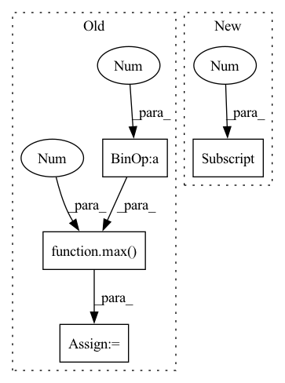

Pattern ID :38272

Before Change
// p4 ─> p4p5 ─> pan_out1
// ↓ ↑
// p3 ─> pan_out2 ───┘
csp_depth = max(round(depth_mul * 2), 1)
p3, p4, p5 = features // p3: [64, 64, 256], p4: [32, 32, 512], p5: [16, 16, 512]
p3 = conv_dw_pw_block(p3, p3.shape[-1] // 2, kernel_size=1, activation=activation, name=name + "p3_down_") // [64, 64, 128]
p4 = conv_dw_pw_block(p4, p4.shape[-1] // 2, kernel_size=1, activation=activation, name=name + "p4_down_") // [32, 32, 256]
// p4p5: [32, 32, 256]
p4p5 = upsample_merge([p4, p5], csp_depth, use_depthwise_conv=use_depthwise_conv, activation=activation, name=name + "p4p5_")
// pan_out2: [64, 64, 128]
pan_out2 = upsample_merge([p3, p4p5], csp_depth, use_depthwise_conv=use_depthwise_conv, activation=activation, name=name + "p3p4p5_")
// pan_out1: [32, 32, 256]
After Change
nn = upsample_merge([nn, upsamples[-1]], fpn_depth, use_depthwise_conv=use_depthwise_conv, activation=activation, name=name + p_name)
upsamples.append(nn)
downsamples = [upsamples[-1]]
// downsamples: [p3p4p5], upsamples[:-1][::-1]: [p4p5, p5] -> [p5, p4p5, p3p4p5]
for id, ii in enumerate(upsamples[:-1][::-1]):
cur_name = name + "c3n{}_".format(id + 3)
In pattern: SUPERPATTERN
Frequency: 4
Non-data size: 4
Instances
Fragment ID: 109537831
Project Name: leondgarse/keras_cv_attention_models
Commit Name: bef44f2c07106cb7cf251facb6581ef6220cde48
Time: 2022-03-18
Author: leondgarse@gmail.com
File Name: keras_cv_attention_models/yolor/yolor.py
M Class Name: AnonimousClass
N Class Name: AnonimousClass
M Method Name: path_aggregation_fpn(5)
N Method Name: path_aggregation_fpn(5)
M Parent Class:
N Parent Class:
M File Name: keras_cv_attention_models/yolor/yolor.py
N File Name: keras_cv_attention_models/yolor/yolor.py
M Start Line: 139
M End Line: 152
N Start Line: 204
N End Line: 220
'>
Before Change
def __getitem__(self, idx):
// get index data
data = self.data.iloc[self.data_index.index_start.iloc[idx] : self.data_index.index_end.iloc[idx] + 1].copy()
// todo: handle missings -> fill them up with strategy
// determine data window
sequence_length = len(data)
max_prediction_length = self.max_prediction_length
if self.randomize_length is not None:
// modify sequence length
sequence_length_prob, encode_length_probability = Beta(*self.randomize_length).sample(torch.Size([2]))
sequence_length = int(max(1, Binomial(sequence_length, sequence_length_prob).sample()))
max_prediction_length = int(max(1, Binomial(max_prediction_length, encode_length_probability).sample()))
if sequence_length < len(data):
data = data.iloc[-sequence_length:] // select subset of sequence
encode_length = min(max(0, sequence_length - max_prediction_length), self.max_encode_length)
decode_length = sequence_length - encode_length
// extract data
After Change
assert sequence_length >= self.min_prediction_length
// determine prediction/decode length and encode length
decode_length = min(
data.iloc[-1]["__time_idx__"] - (self.min_prediction_idx - 1), self.max_prediction_length, sequence_length
)
encode_length = sequence_length - decode_length
assert decode_length >= self.min_prediction_length
'>
Fragment ID: 109537830
Project Name: jdb78/pytorch-forecasting
Commit Name: 79cfec0818dbe78d8773534e6ce8f5fd578c3c3a
Time: 2020-06-22
Author: beitner.jan@bcg.com
File Name: temporal_fusion_transformer_pytorch/data.py
M Class Name: TimeSeriesDataSet
N Class Name: TimeSeriesDataSet
M Method Name: __getitem__(2)
N Method Name: __getitem__(2)
M Parent Class: Dataset
N Parent Class: Dataset
M File Name: temporal_fusion_transformer_pytorch/data.py
N File Name: temporal_fusion_transformer_pytorch/data.py
M Start Line: 149
M End Line: 164
N Start Line: 186
N End Line: 220
'>
Before Change
length = resp.getheader("content-length")
if length:
length = int(length)
blocksize = max(4096, length // 100)
else:
blocksize = 1000000 // just made something up
buf = io.BytesIO()
After Change
def download(url, path):
file_name = os.path.join(path, url.split("/")[-1])
if os.path.exists(file_name):
print(f"Dataset already downloaded at {file_name}.")
'>
Fragment ID: 109537827
Project Name: continvvm/continuum
Commit Name: 21c44f320830e89c7754209a9c98affafb0932c8
Time: 2020-06-17
Author: ar.douillard@gmail.com
File Name: continuum/download.py
M Class Name: AnonimousClass
N Class Name: AnonimousClass
M Method Name: download(2)
N Method Name: download(3)
M Parent Class:
N Parent Class:
M File Name: continuum/download.py
N File Name: continuum/download.py
M Start Line: 6
M End Line: 36
N Start Line: 7
N End Line: 17
'>
Before Change
nn = conv_dw_pw_block(nn, channel, 3, strides=2, use_depthwise_conv=use_depthwise_conv, activation=activation, name=stack_name + "downsample_")
nn = csp_stack(nn, depth, use_depthwise_conv=use_depthwise_conv, activation=activation, name=stack_name)
if use_spp:
ssp_depth = max(round(depth_mul * 2), 1)
nn = res_spatial_pyramid_pooling(nn, ssp_depth, activation=activation, name=stack_name + "spp_")
features.append(nn)
nn = [features[ii] for ii in out_features]
After Change
inputs = keras.layers.Input(input_shape)
Stem
stem_width = stem_width if stem_width > 0 else channels[0] // 2
if use_focus_stem:
nn = focus_stem(inputs, stem_width, activation=activation, name="stem_")
else:
'>
Fragment ID: 109537825
Project Name: leondgarse/keras_cv_attention_models
Commit Name: bef44f2c07106cb7cf251facb6581ef6220cde48
Time: 2022-03-18
Author: leondgarse@gmail.com
File Name: keras_cv_attention_models/yolor/yolor.py
M Class Name: AnonimousClass
N Class Name: AnonimousClass
M Method Name: CSPDarknet(12)
N Method Name: CSPDarknet(7)
M Parent Class:
N Parent Class:
M File Name: keras_cv_attention_models/yolor/yolor.py
N File Name: keras_cv_attention_models/yolor/yolor.py
M Start Line: 84
M End Line: 102
N Start Line: 109
N End Line: 141